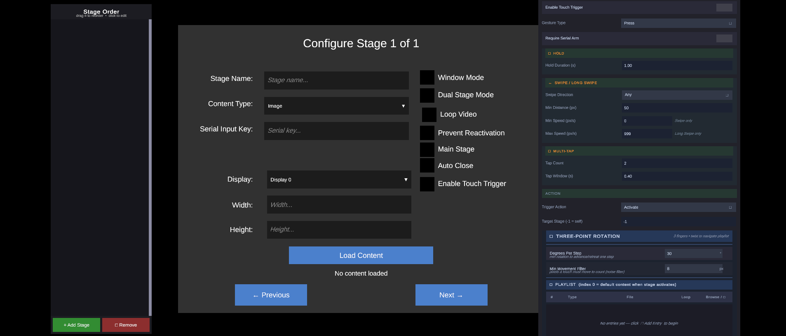

Windows app · 2024 – Present
Stage Controller: Windows App for Interactive Installations
A standalone Windows app that runs multi-display shows with video, image, and web content, driven by touch and Arduino input.
About this project
Stage Controller is the standalone Windows version of my Dynamic Stage Manager, a framework I first built in Unity for interactive installations. I upgraded it into a .NET 8 / WPF app that no longer needs Unity. It runs a show of "stages" (images, videos, or web pages) across one or more monitors. Stages switch on serial input from Arduinos, on touch gestures, or on conditions based on other stages. A control panel lets operators set up the show, run it live, and test serial input without hardware.
Key features
- Stages with image, video, or web page content, shown fullscreen or in a movable window
- Multi-display output, with extra outputs so one stage can drive several monitors
- Serial input from Arduinos on multiple COM ports, with automatic reconnect
- Touch gestures: press, release, hold, swipe, multi-tap, long swipe, hold and release, and three-point rotation
- Touch triggers that can be armed by a serial key
- Trigger conditions: a stage fires when all or any of the watched stages are active
- Control panel with Setup, Live control, Serial ports, Serial tester, and Log tabs
- Global shortcuts, auto-start on launch, tray icon, and a single-instance guard
- Safe config saving with a backup, and a pre-start checklist for missing files and displays
My contribution
I upgraded my Unity-based Dynamic Stage Manager into this standalone Windows application.